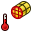
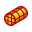

Верстак FEM предоставляет современный набор инструментов для анализа Методом Конечных Элементов в FreeCAD. В основном это значит объединение в одном GUI всех инструментов для выполнения анализа Методом Конечных Элементов.

Шаги которые необходимо сделать чтобы произвести расчет МКЭ в GUI верстака FEM FreeCAD:
- Препроцессор
- Моделирование геометрии, здесь FreeCAD уже является вполне развитым приложением.
- Создать Расчет:
- Создать Сетку МКЭ из геометрической модели.
- Добавить Условия, такие как нагрузки и фиксаторы к расчетной модели.
- Добавить в расчетную модель Материал
- Решение уравнений
- Решение системы уравнений из FreeCAD GUI.
- Постпроцессор
- Посмотреть в FreeCAD GUI Результаты.
Выше в основном описано как производить расчет МКЭ в верстаке FEM FreeCAD. Подробная справка об инструментах GUI представлена ниже.
В версиях 0.15 и 0,16 FreeCAD модуль FEM может использовать платформы Windows, Mac OSX и Linux. Поскольку верстак FEM использует внешние программы, многие ручные настройки, требуемые для того, чтобы верстак FEM стал готов к использованию, зависит от используемой Вами операционной системы. Смотрите FEM Install.
Инструменты
 FEM mesh to mesh: Convert the surface of a FEM mesh to a mesh.
FEM mesh to mesh: Convert the surface of a FEM mesh to a mesh.-
 Analysis container: Создаёт новый контейнер для механического анализа. Если перед кликом на нём было выделено твёрдое тело, будет запущен диалог создания сетки МКЭ.
Analysis container: Создаёт новый контейнер для механического анализа. Если перед кликом на нём было выделено твёрдое тело, будет запущен диалог создания сетки МКЭ. -
 Solver Calculix: Создаёт решатель для этого анализа. В большинстве случаев решатель будет создан вместе с анализом.
Solver Calculix: Создаёт решатель для этого анализа. В большинстве случаев решатель будет создан вместе с анализом. - Solver Z88:
{kind=link}
-
 FEM mesh from shape by Netgen:
FEM mesh from shape by Netgen: - FEM mesh from shape by GMSH:
- FEM mesh region:
- FEM mesh group:
-
 Nodes set: Создаёт/определяет набор нодов. Пока не работает.
Nodes set: Создаёт/определяет набор нодов. Пока не работает.
{kind=link}
{kind=link}
{kind=link}
- FEM material for solid: Выберите материал из базы данных.
-
 FEM material for fluid: Lets you select a material from the database.
FEM material for fluid: Lets you select a material from the database. - Nonlinear mechanical material: Lets you select a material from the database.
{kind=link}
{kind=link}
{kind=link}
- Constraint fixed: Используется для определения ограничения с фиксацией точки/грани/поверхности.
- Constraint displacement: Используется для определения ограничений смещения для точки/грани/поверхности.
-
 Constraint plane rotation: Используется для определения ограничения плоского вращения на плоской поверхности.
Constraint plane rotation: Используется для определения ограничения плоского вращения на плоской поверхности. -
 Constraint contact: Используется для определения контактного ограничения между двумя поверхностями.
Constraint contact: Используется для определения контактного ограничения между двумя поверхностями. - Constraint transform:
{kind=link}
{kind=link}
{kind=link}
-
 Constraint self weight: Used to define a gravity acceleration acting on a model.
Constraint self weight: Used to define a gravity acceleration acting on a model. -
 Constraint force: Используется для определения силы в [N], приложенной равномерно к выбираемой поверхности в определяемом направлении.
Constraint force: Используется для определения силы в [N], приложенной равномерно к выбираемой поверхности в определяемом направлении. -
 Constraint pressure: Используется для определения ограничения давления.
Constraint pressure: Используется для определения ограничения давления.
- Constraint bearing: Используется для определения подшипниковых ограничений.
- Constraint gear: Используется для определения редукторных ограничений.
- Constraint pulley: Используется для определения ограничений шкива.
- Constraint fluid boundary:
{kind=link}
{kind=link}
{kind=link}
{kind=link}
-  Constraint temperature: Используется для определения температурных ограничений для точки/грани/поверхности.
-
 Constraint heatflux: Используется для определения ограничений тепловых потоков на поверхностях.
Constraint heatflux: Используется для определения ограничений тепловых потоков на поверхностях. -  Constraint initial temperature: Используется для определения начальной температуры тела.
{kind=link}
{kind=link}
- Solver job control: Открывает меню для запуска решателя Calculix.
- Solver run calculation: Runs the selected solver of the active analysis.
{kind=link}
{kind=link}
-
 Results purge: Очищает текущие результаты расчёта (Results в древе проекта).
Results purge: Очищает текущие результаты расчёта (Results в древе проекта). - Result show: Используется для показа результатов исследования (Von Mises Stress или Displacement).
{kind=link}
{kind=link}
- Post Create clip filter:
- Post Create scalar clip filter:
- Post Create cut filter:
- Post Create warp vector filter:
{kind=link}
{kind=link}
{kind=link}
{kind=link}
{kind=link}
Учебники
Учебник 1 FEM CalculiX Cantilever 3D
Учебник 2 Учебник по МКЭ
Учебник 3 FEM Tutorial Python
Tutorial 4 FEM Shear of a Composite Block
Набор учебников по термомеханическому анализу Архив zip с запакованными файлами PDF
Video Tutorial 1 Forum post with you tube link
Video Tutorial 2 Forum post with you tube link
Further video Tutorials Forum post with you tube link
Ссылки
Установка FEM содержит детальное определение настройки работы модуля FEM.
FEM Mesh содержит дальнейшую информацию о сети МКЭ в FreeCAD
FEM CalculiX содержит информацию об интерфейсе между модулем FEM и текущим решателем CalculiX
FEM Project содержит более детальную информацию о единицах, ограничениях и о проектировании модуля FEM.